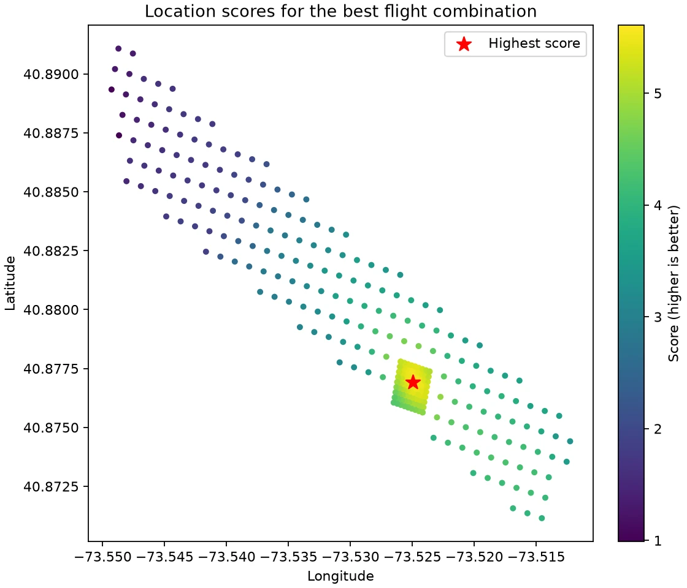

Sound gives away
the location.
A passing aircraft’s pitch changes with its motion relative to the microphone. DOPPLERGEIST matches that change to recorded flight paths.
Find the aircraft in the audio.
The detector scans the full recording for moving frequency ridges and groups harmonics from the same passage.

Match the flight path.
Historical ADS-B data supplies aircraft positions and velocities. The model predicts the sound received at each possible microphone position, including its travel time.

Find the shared position.
The search fits independent flyovers to one location and recording clock. Terrain and aircraft altitude enter the sound-propagation calculation.
The result includes ranked locations and a decision. Ambiguous matches or incomplete coverage produce an inconclusive result.
Decision rules
Run it locally.
Install Python 3.11 or later and FFmpeg, then start the local upload interface.
git clone https://github.com/1337isnot1337/DOPPLERGEIST.git
cd DOPPLERGEIST
python -m venv .venv
.venv/bin/python -m pip install .
.venv/bin/dopplergeist serve --jobs jobs --online --port 8765Open http://127.0.0.1:8765 and provide your audio and recording-time window. File upload time does not establish when the audio was recorded.